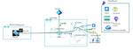
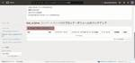
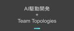
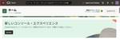
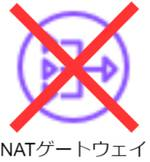

APC 技術ブログ
https://techblog.ap-com.co.jp/
株式会社エーピーコミュニケーションズの技術ブログです。
フィード
Backstageに入門してみよう：02_PostgreSQLとの接続とGitHub Integrationの実装
APC 技術ブログ
以前の記事では、 Backstage を開発するための環境構築の手順から、実際に開発モードで Backstage インスタンスを起動するところまでを行いました。 本記事では、ローカル環境で起動した PostgreSQL を Backstage と接続する手順と、 GitHub Integration 機能を用いたユーザー認証機能の実装方法について説明します。
6時間前

プラットフォームエンジニアリング：Azureで安全なAI駆動開発について考えてみる
APC 技術ブログ
こんにちは、ACS事業部の折田です。 先月入社し、今回が初めての技術ブログ投稿となります。 最近、AI駆動開発が話題ですね。先日のGlobal AzureでもGitHub Copilotのハンズオンが実施され、これからますますAI駆動がエンジニアの日常となっていくでしょう。 しかし、企業によってはGitHub Copilot自体が使用不可なケースもあります。その際に安全にAI駆動開発を行うにはどうすればいいでしょうか。今回はAzure上で安全にAI駆動開発を行う方法を考察してみました。 まだ机上での考察なので、保証は致しかねますが、参考になれば幸いです。 安全なAI駆動開発の構成 設計のポイン…
12時間前

【OCI】OCI・AWS・Azureの主要サービス／用語比較
APC 技術ブログ
目次 目次 はじめに どんなひとに読んで欲しい OCI、AWS、Azure 類似サービス表 コンピューティング ストレージ データベース ネットワーキング その他 OCI、AWS、Azure 概要用語比較 まとめ おしらせ はじめに こんにちは、クラウド事業部の大竹です。 先日 OCI Architect Associate (2024) に無事合格しました。 OCIより先にAzureとAWSに触れていたので、OCIについて学習を開始するにあたり、「このOCIのサービスは、Azure・AWSだと何に当たるの？」ということを理解しようと思い、簡単にまとめました。 ※各社のサービス毎に違いがありま…
1日前

眠れなくなるほど面白い暗号化技術 第2回 - 300年間暗号学者を欺き続けた魔法の表 3
3
APC 技術ブログ
はじめに こんにちは、クラウド事業部の丸山です。 前回のシーザー暗号はいかがでしたか？ 単純ながらも暗号の基本概念を学ぶ絶好の入門編でしたね。 しかし歴史的に見れば、シーザー暗号の致命的な弱点はすぐに明らかになりました。 文字の出現頻度を分析するだけで簡単に解読できてしまうのです。 そこで今回は、この弱点を巧妙に克服した「ヴィジュネル暗号」のをご紹介します。 16世紀に考案されたこの暗号は、なんと300年もの間「解読不能な暗号」として君臨し、 「le chiffre indéchiffrable」（解読不能の暗号）という異名まで与えられました。 一体どのような仕組みが、当時の最高の頭脳たちをこ…
3日前

【OCI】バックアップ？コピー？OCIのバックアップとクローンを使い分けよう！
APC 技術ブログ
はじめに こんにちは。クラウド事業部 IaC技術推進部の飯島です。 OCIでインスタンスを使っていると「バックアップを取りたい」「別の環境に複製したい」というシーンが出てきます。そこで出てくる「バックアップ」と「クローン」。一見似ていますが、目的や挙動が異なります。 本記事では、それぞれの違いと使い分けのポイントを紹介します。 本記事の前提 本記事では「ブロック・ストレージ」におけるバックアップとクローンに触れていきます。 「ブロック・ストレージ」の他にも「オブジェクト・ストレージ」と「ファイル・ストレージ」がありますが、本記事では触れません。 ブロック・ストレージの種類 ブロック・ストレージ…
3日前
【AWS】【初心者向け】CloudFormationでスクリプトから簡単にSSMドキュメントを作成する
APC 技術ブログ
こんにちは、クラウド事業部の菅です。以前、CloudFormationでSSMドキュメントを作成したことがあったのですが、テンプレートファイルの作成で困ったことがありました。CloudFormationでSSMドキュメントを作成する場合、スクリプトを文字型配列として定義する必要があります。この、スクリプトを文字型配列として定義する作業を、少ない作業量かつ管理しやすい形式で行うために試行錯誤しましたのでご紹介します。
5日前
【OCI】 Oracle Cloud Infrastructureの特徴・使い方・注意点をサクッとまとめてみた
APC 技術ブログ
はじめに こんにちは、クラウド事業部の葛城です。 今回は、Oracle Cloud Infrastructure（OCI）の「Architect Associate」資格に合格したことを報告しつつ、OCIについての情報をまとめてみました。 実際に環境を触って試したかったのですが、通常15分ほどで払い出されるOCI Free Tierのアカウントが、登録は完了したものの「アカウント審査待ち」のメールが届き、まだ環境を実際に触ることができていません。 そこで今回は、実際にOCIを利用している方々のブログを参考に、 OCIってどんなクラウド？ どんな使い方ができるの？ 注意点は? といった基本的な特…
6日前
【見学レポート】Japan IT Week@2025春展へ行ってきました！
APC 技術ブログ
こんにちは。エーピーコミュニケーションズ MBS部 ICTセールス＆コンサルチームの関口と申します♪ 先日、最新のIT技術や製品の情報収集としてチームメンバー４名で「Japan IT Week」に行ってまいりました。本記事では参加したカンファレンスの内容と感想を簡単にまとめました。また、会場の雰囲気も合わせてお伝えできればと思っておりますのでお気軽に読んでいただけますと幸いです！ そもそもJapan IT Weekとは？ 【公式】Japan IT Weekwww.japan-it.jp 参加した目的 ブース会場の雰囲気 カンファレンス参加レポート ★顧客起点のマーケティング 講演内容 感想 ★…
7日前
【OCI】AWSと比較して分かるOCIの強み3選
APC 技術ブログ
目次 目次 はじめに この記事で分かること OCIが優れている点3つ 1.低コスト コンピュートサービス ストレージ ネットワーク 2.ソブリンクラウド対応 3.VMwareワークロードのルート権限 まとめ 関連記事 おわりに はじめに こんにちは、エーピーコミュニケーションズの松尾です。 OCIのおすすめポイントをAWSと比較する形で3つ、紹介したいと思います！ AWSも使ってきた私の独断と偏見です。 この記事で分かること OCIがAWSより優れているポイント3つ OCIが向いているユースケースが何か OCIが優れている点3つ 私のおすすめ順に紹介します。 1.低コスト 2.ソブリンクラウド…
7日前
【OCI】Oracle Cloud Free Tierに登録から初回ログインまでしてみた
APC 技術ブログ
はじめに こんにちは！クラウド事業部の志賀です。 Oracle Cloudの学習のために今回「Oracle Cloud Free Tier」に登録してみました！ この記事では、私が実際に登録した経験をもとにその方法をお伝えします。 「Free Tierを使いたいけど、登録の仕方が良くわからない」という方に向けて、登録時の手順と画面を載せているので、参考になれば幸いです。 Oracle Cloud Free Tierとは Oracleが提供するクラウドサービスの無料利用枠です。これからクラウドを学びたい方や、Oracle Cloudの機能を試してみたい方が、無償で一定のサービスを利用できます。 …
7日前

生成AIによって劇的に変わるDevOps開発体制の未来 鍵を握るPlatform Engineering 1
APC 技術ブログ
取締役兼ACS事業部長の上林です。 生成AIによるAI駆動開発・AI Powerd DevOpsなどの概念が出現してきたことにより、開発のスタイルはもちろん、開発組織自体も大きく変革を迎えようとしております。その未来予測をしてみたいと思います。 生成AI登場により変化するBizDevOpsの開発チーム（Stream Alignedチーム） 一番大きな変化として予想されるのが、これはすでにこういった海外のblogでも言われていますが、開発チーム（Stream Alignedチーム）の編成自体が大きく変わるということです。これまでは高速な開発(FastFlow)を実現するために、いわゆる2ピザチー…
8日前
GitHub Actionsのセキュリティ対策 1
APC 技術ブログ
ACS事業部 亀崎です。 今年もやってまいりました、5月4日。2022年から毎年5月4日に記事を1つ投稿してまいりました。 2022年は AKS x Dapr 、 2023年は Platform Engineeringにおける責任共同モデルと関心事の分離 、そして昨年2024年は BackstageのKubernetes Plugin x AKS というテーマで記事を投稿していました。 techblog.ap-com.co.jp 5月4日がなんなの？？ とお思いの方もいらっしゃるとは思いますが、一応特別な意味のある日付なのです。 ということで今年もこの日5月4日に記事を投稿したいと思いますので…
10日前
【OCI】OCI FLB（Flexible Load Balancer）経由でHTTP接続してみた
APC 技術ブログ
はじめに こんにちは、クラウド事業部の齋藤です！ OCIでロードバランサ経由の接続ってどうやってやるんだろうと気になったのでやってみました。 構成概要
13日前

【OCI】オブジェクトストレージのレプリケーションをしてみた
APC 技術ブログ
はじめに こんにちは、クラウド事業部の延原です。 OCIのオブジェクトストレージである「バケット」のレプリケーションを検証したので手順を紹介させて頂きます。 ストレージの冗長機能として基本的なものですが、実際の画面を見ることでよりイメージしやすいと思うので、ご参考にして頂けますと幸いです。 本検証は無料トライアルの制約により同一リージョン間のレプリケーションとなっています。 手順概要 レプリケーションのソースおよびターゲットとなるバケットの作成 レプリケーションポリシーの作成 ファイルのアップロード ターゲットバケットの確認 手順1.レプリケーションのソースおよびターゲットとなるバケットの作成…
13日前

【AWS】検証環境ならNATゲートウェイでは無くNATインスタンス＋踏み台にしよう
APC 技術ブログ
はじめに こんにちは、株式会社エーピーコミュニケーションズ クラウド事業部の鈴木歩です。 AWS でプライベートサブネットに置いたリソースをインターネットに通信させるときには 一般的には NAT ゲートウェイを使うことが多いかと思います。 ただ、NAT ゲートウェイは気づかないうちに結構な料金がかかっているケースがよくあります。 【参考】 0.062USD/Hour + 0.062USD/GB → 1 か月で 10GB 通信した場合は約 6,473 円 本番環境ではマネージドサービスの恩恵を受けられると思いますが、検証環境では旨味は少ないかと思います。 そこで私がよく取る方法として、NAT イ…
13日前
【AWS】【初心者向け】料金表データ取得 (AWS Price List Bulk API)
APC 技術ブログ
こんにちは、クラウド事業部の菅です。前回、AWS Price List Query APIを使用して料金表データを取得しました。今回は、AWS Price List Bulk APIを使用して料金表データを取得してみます。
13日前
【AWS】【初心者向け】料金表データ取得 (AWS Price List Query API)
APC 技術ブログ
こんにちは、クラウド事業部の菅です。AWSでは、各サービスを利用することによって発生する費用を料金表として公開しています。この料金表のデータは以下2通りの方法で取得できるようになっています。* AWS Price List Query API* AWS Price List Bulk API今回はAWS Price List Query APIを使用して料金表データの取得を行ってみます。
13日前
Soraで作る不思議かわいい5秒動画：石庭を掃除するロボット掃除機とシマリスたち
APC 技術ブログ
動画生成AI「Sora」を使って、石庭を掃除するロボット掃除機や釣りをするシマリスなど、ユニークで不思議な5秒動画を制作。プロンプトの工夫や構図のポイントなど、成功しやすい作り方のコツも紹介します。
14日前

【AWS】AWS Managed Notifications（マネージド通知）についてまとめました
APC 技術ブログ
目次 目次 はじめに AWS Managed Notificationsとは これまでのAWS User Notificationsとの相違点 対象リージョン 料金 利用方法の紹介 おわりに お知らせ はじめに こんにちは、クラウド事業部の山下です。 クラウド環境の運用にあたって、サービスの障害情報やセキュリティ等の通知を管理することは非常に重要です。 AWS Healthの通知を管理するためのAWS Managed NotificationsというAWS User Notificationsの機能のひとつについて紹介します。 AWS Managed Notificationsの概要と設定手順…
14日前
【OCI】OCIのモニタリングサービスデモ：リソース監視とアラート設定をしてみた
APC 技術ブログ
はじめに こんにちは。クラウド事業部の宋です。 今回は、Oracle Cloud Infrastructure（OCI）の無料ティアを活用して、簡単に取り組めるモニタリングサービス（Monitoring）のデモを行います。 私はOCIのアカウントもを持っていなかったため、軽く作成手順も載せておきます。 クラウドリソースの使用状況を監視し、予期しないリソース使用を検知するためのアラートを設定する方法を確認しましょう。 この記事で分かること OCI無料ティアアカウントの設定 モニタリングサービスの概要と準備 コンピュートインスタンスのCPU使用量を監視するダッシュボード作成 CPU使用量が閾値を超…
14日前
【CrowdStrike】クエリー徹底解説 その１
APC 技術ブログ
2025年は12回に渡ってCrowdStrikeの主に利用者の立場で役に立つ情報をお伝えします。今回から「CrowdStrike Falcon」の強力な機能の一つであるFalconセンサーの「クエリー」に焦点を当て、その機能概要から具体的な活用方法まで、全3回にわたって詳細に解説します。第1回目は「イベント検索」についてご紹介します。
14日前
【AWS】AWS 認定資格試験に申し込みしようとして、Pearson VUE でアカウント利用制限がかかった話
APC 技術ブログ
はじめに こんにちは、クラウド事業部の坂口です。 先日、AWS認定資格試験に申し込みをしようとしたところ Pearson VUE でアカウント利用制限がかかり制限を解除するまで申し込み操作が不可になりました。 ※正確には、申し込み操作が完了しない状態 自身への戒めとメモがてら、原因と解消に至った流れを書いていこうと思います。 目次 はじめに 目次 関連記事 発生した状況 利用制限の原因 利用制限の解除 さいごに お知らせ 関連記事 ※内容には特別関連性は無いですが、アカウント利用制限を乗り越えて受験した試験についてはコチラ↓ techblog.ap-com.co.jp 発生した状況 改めてにな…
15日前
【AWS】【合格体験記】AWS Certified AI Practitioner (AIF-C01)に合格できました。
APC 技術ブログ
目次 目次 はじめに 取得の理由 勉強方法 試験結果 おわりに お知らせ はじめに こんにちは、クラウド事業部の上村です。 先月、AWS Certified AI Practitioner(AIF-C01)に合格しました 取得の理由 All Certificationsのために、取得することにしました。 勉強方法 ・勉強期間 2週間程度 ・勉強時間 20時間程度 CloudTechでAIF-C01問題集を3周程度行う BlackBeltやAWS公式ドキュメントでサービス理解を深めるようにしました。 試験結果 1000点でした！ おわりに 1000点を取れたのは良かったですが、少し驚きました… …
15日前
【AWS】【合格体験記】AWS Certified Machine Learning Engineer - Associate (MLA-C01)に合格できました。
APC 技術ブログ
目次 目次 はじめに 取得の理由 勉強方法 試験結果 おわりに お知らせ はじめに こんにちは、クラウド事業部の上村です。 先月、AWS Certified Machine Learning Engineer - Associate (MLA-C01)に合格しました 取得の理由 All Certificationsのために、取得することにしました。 勉強方法 ・勉強期間 3週間程度 ・勉強時間 20～30時間程度 CloudTechでMLA-C01問題集を3周程度行う BlackBeltやAWS公式ドキュメントでサービス理解を深めるようにしました。 試験結果 874点でした！ おわりに AI …
15日前
【AWS】EC2 Instance Connect EndPointを利用してローカルからAurora/RDSに接続してみる
APC 技術ブログ
目次 目次 はじめに 環境 ローカル環境 前準備 セキュリティグループの設定 EICエンドポイントの作成 IAM関連の作成 接続用のスクリプト まとめ はじめに こんにちは、クラウド事業部の上村です。 今回は、EC2 Instance Connect Endpointを利用してポートフォワーディングして、RDSに接続を試してみようと思います。 以前は、EC2 Instance Connect Endpoint でRDSに直接接続することが可能でしたが修正されてしまい、EC2を経由する必要があります。 環境 ローカル環境 Windows 10 PowerShell awscli v2 前準備 先…
15日前
【OCI】クラウドシェア率上位3社とOCIのコストを試算、比較してみた
APC 技術ブログ
目次 目次 はじめに こんな人に読んで欲しい 前提条件 各クラウドのリソース一覧とコスト結果 まとめ おわりに はじめに こんにちは、クラウド事業部の馬藤です。 OCIはAWS / Azure / Google Cloudと比べて安いと聞いているものの、どのくらいのコストメリットがあるかを具体的にイメージしたく、本記事ではざっくりと整理したものとなります(※詳細な金額は各クラウドの試算ツールなどをご利用ください)。 今回は世間一般的に扱われているWeb三層構造(最小構成)を構築した場合の金額をユースケースにしています。 こんな人に読んで欲しい OCIに興味がある人 コスト削減に興味がある人 前…
16日前
眠れなくなるほど面白い暗号化技術 第1回 - 古代ローマの秘密通信
APC 技術ブログ
はじめに こんにちは、クラウド事業部の丸山です。 普段何気なく使っているインターネット通信技術やメッセージアプリ。 そのすべてを陰で支える「暗号化技術」の存在を、あなたはどれだけ意識していますか？ 先日、古代から現代までの暗号技術の歴史を紹介するYoutube動画を見て、学生時代に勉強した暗号理論の記憶が蘇ってきました。 そして同時に、悲しきかなほとんどの知識が風化していることに愕然としました。 改めて復習をしていこうと思ったため、何回かに分けて暗号化技術の歴史と仕組みについて、実装も交えながら学習していくことにしました。 今の時代は本当に便利で、情報は調べれば出てきますし、仕組みの実装も生成…
17日前
【AWS】GitHubへのPushをトリガーにBLEA（CDKリソース）を複数アカウントに一括デプロイする
APC 技術ブログ
はじめに こんにちは、エーピーコミュニケーションズ クラウド事業部の髙野です。 AWSのセキュリティベースラインを素早く構築できるCDKテンプレートであるBaseline Environment on AWS（BLEA）を複数のアカウントやリージョンに効率的にデプロイする方法を検討している際に、CDK PipelinesというCDKのコンストラクトライブラリを知りました。 このCDK Pipelinesを使用してCI/CDパイプラインを作成することで、GitHubなどにソースコードの修正をPushしたことをトリガーにBLEAを複数の環境に自動でデプロイできるようになります。 この記事では、CD…
17日前
【AWS】AWS Certified Machine Learning Engineer - Associate (MLA-C01) に合格したので所感を綴る
APC 技術ブログ
目次 目次 はじめに 関連記事 試験について 点数 勉強期間 教材 試験の感想 お知らせ はじめに こんにちは、クラウド事業部の坂口です。 先月に AWS Certified Machine Learning Engineer - Associate に合格いたしました。 個人的には若干今更な気もしていますが、受けてみた感想などをつらつらと書いていこうと思います。 関連記事 ※弊社でのその他MLA合格体験記 techblog.ap-com.co.jp techblog.ap-com.co.jp techblog.ap-com.co.jp 試験について 点数 901 勉強期間 トータルの勉強期間…
17日前
【OCI】OCIの生成AIサービス「Generative AI Agent」でRAGを試す！
APC 技術ブログ
img{ display: inline-block; box-sizing: border-box; border: solid 1px #333; } はじめに こんにちは、クラウド事業部の早房です。 今回は OCI（Oracle Cloud Infrastructure）の生成AIサービス Generative AI Agents を使用したRAGを試してみました。 是非最後までご覧ください！✨ 目次 はじめに Generative AI Agent とは Generative AI Agent を作成する Object Storage バケット & PDF アップロード Knowled…
20日前